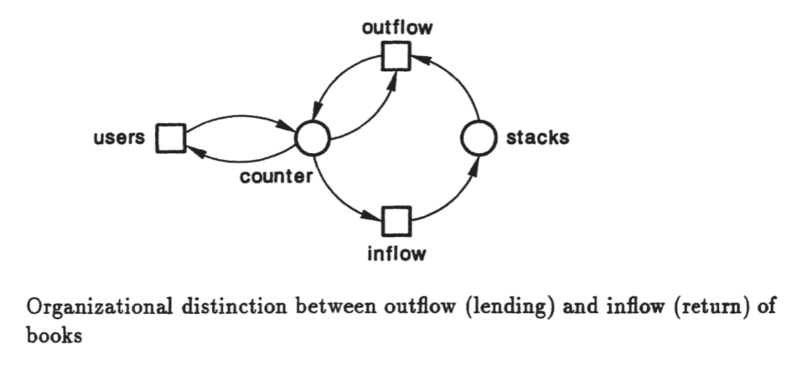
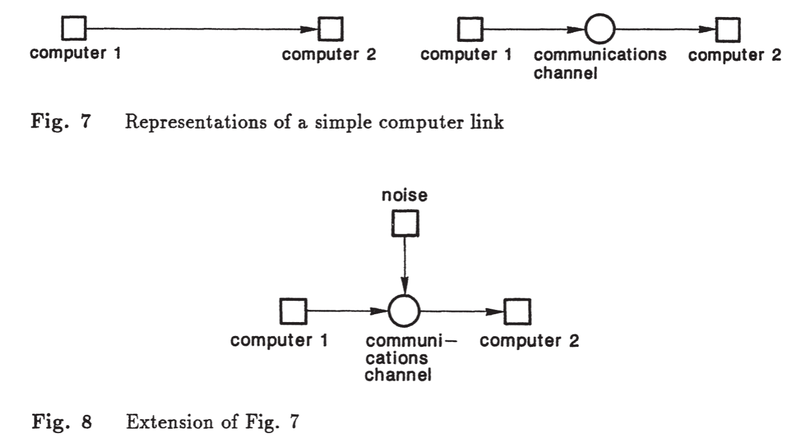

Redes de Petri – Conceitos Fundamentais#
O desenvolvimento de software nas décadas de 1960 e 1970 enfrentava desafios relacionados à complexidade crescente dos sistemas e à dificuldade de comunicação entre equipes. Nesse período, os ambientes de desenvolvimento eram colaborativos, utilizando quadros-negros (blackboards) como suporte central para a especificação de sistemas. Nos blackboards eram desenhados fluxogramas, diagramas de estados, redes de transição e outros esboços visuais, permitindo que os técnicos expressassem suas ideias de forma clara e imediata. Esse ambiente favorecia reuniões produtivas, com discussões colaborativas, e facilitava a compreensão e o compartilhamento das especificações.

Com a transição para a programação online, os quadros foram substituídos por terminais, que não suportavam desenhos ou comunicação visual rica, resultando em perda de clareza e interação coletiva. Nesse contexto, a emergência da programação estruturada e do refinamento passo a passo (stepwise refinement) trouxe maior rigor ao desenvolvimento de software, estabelecendo métodos formais e disciplina para enfrentar a crescente complexidade dos sistemas.

Foi nesse ambiente que surgiram as Redes de Petri, formalismo desenvolvido por Carl Adam Petri em 1962, capaz de combinar a expressividade visual dos blackboards com uma base matemática rigorosa. As Redes de Petri permitem representar estados, eventos, concorrência e sincronização de forma gráfica, oferecendo suporte para modelagem, edição, verificação e revisão de sistemas complexos. A notação formal combina clareza visual com precisão matemática, permitindo a análise de propriedades críticas, como alcance (reachability), vivacidade (liveness), deadlock e invariantes de lugar.

Nos anos 1980, Jacques Vautherin introduziu uma abordagem algébrica para Redes de Petri, substituindo tokens tradicionais por tipos de dados algébricos definidos pelo usuário, conferindo maior semântica e estrutura aos modelos. Wolfgang Reisig aprimorou esse formalismo, integrando-o com especificações algébricas formais para representar simultaneamente o controle, através da estrutura da rede, e os dados, por meio de tipos, assinaturas e axiomas. Essa combinação permitiu modelar sistemas de maneira modular e formal, preservando expressividade visual e precisão matemática.
A história das Redes de Petri está intimamente ligada à crise do software, termo cunhado no final dos anos 1960 para descrever problemas emergentes no desenvolvimento de sistemas, como atrasos, custos excessivos e baixa qualidade. Durante a Conferência da OTAN sobre Engenharia de Software, realizada em Garmisch, Alemanha, em 1968, o termo foi utilizado oficialmente, destacando a frustração coletiva com os métodos da época. Edsger W. Dijkstra, em 1972, enfatizou que controlar a complexidade crescente dos sistemas era um dos problemas mais desafiadores da engenharia. Entre os sintomas da crise estavam o estouro de prazos e orçamentos, a entrega de software de baixa qualidade e sistemas difíceis de manter, frequentemente chamados de “vaporware”.
As causas incluíam aumento rápido da complexidade dos sistemas, métodos de desenvolvimento artesanais, documentação insuficiente, manutenção dispendiosa e falta de profissionalização da área. A resposta emergente foi a formalização da engenharia de software, com metodologias sistemáticas, documentadas e quantificáveis. Surgiram técnicas estruturadas, ferramentas CASE e modelos de qualidade e maturidade de processos, como ISO 9001 e CMM (Capability Maturity Model). A crise também estimulou a adoção de formalismos teóricos, entre os quais as Redes de Petri se destacaram. Reisig ressalta o princípio “first model, then program”, defendendo que a modelagem formal deve preceder a implementação, especialmente em sistemas concorrentes e distribuídos.
Redes de Petri: Why, What, When e How#
Why – Por que usar Redes de Petri#
As Redes de Petri são utilizadas para modelar e analisar sistemas dinâmicos caracterizados por concorrência, sincronização e compartilhamento de recursos. Seus principais benefícios incluem a representação gráfica e formal, que facilita a compreensão de sistemas complexos, e a capacidade de analisar propriedades essenciais, como alcance, vivacidade, deadlock e invariantes.
What – O que são Redes de Petri#
Uma Rede de Petri é composta por lugares (places), que representam condições ou estados do sistema, transições (transitions), que representam eventos ou ações, e tokens, que indicam a marcação atual do sistema. O grafo é bipartido, com arcos que conectam apenas lugares a transições ou transições a lugares. Essa estrutura permite combinar a representação visual intuitiva com uma base matemática rigorosa.
When – Quando utilizar Redes de Petri#
Redes de Petri são particularmente adequadas para sistemas que envolvem concorrência, protocolos de comunicação, sistemas distribuídos, controle e automação, bem como análise de desempenho e confiabilidade. Elas permitem simular o fluxo de tokens, validar algoritmos distribuídos e estudar a sincronização de eventos simultâneos, sendo uma ferramenta valiosa tanto para modelagem quanto para verificação formal.
How – Como aplicar Redes de Petri#
O processo de aplicação envolve a modelagem, construção de redes representando lugares, transições e tokens; análise das propriedades formais, como alcance, vivacidade e invariantes; simulação do comportamento dinâmico; validação comparando os resultados com o comportamento esperado; e refinamento, ajustando o modelo para maior precisão ou desempenho. Ferramentas como PIPE e WoPeD auxiliam na criação, edição e análise de redes de Petri.
Estrutura Formal e Dinâmica#
Matematicamente, uma rede de Petri é definida pelo quádruplo (P, T, F, M0), em que P é o conjunto de lugares, T o conjunto de transições, F a função que define os arcos e M0 a marcação inicial. O estado de uma rede é representado pela marcação (M), ou seja, a distribuição de tokens nos lugares. Uma transição é habilitada quando todas as suas posições de entrada possuem tokens suficientes. Ao disparar, a transição consome tokens das entradas e adiciona tokens nas saídas, alterando a marcação.
Extensões das Redes de Petri#
As redes podem ser estendidas com arcos ponderados, que exigem múltiplos tokens para disparo, ou arcos inibidores, que impedem o disparo se houver token em um lugar específico. Essas extensões aumentam a expressividade do modelo, permitindo representar restrições complexas de sistemas reais.
Exemplo 1: uma biblioteca#


Abordagem clássica de modelagem#
Componentes Passivos e Ativos em Redes de Petri#
Em sistemas modelados com redes de Petri, é essencial distinguir componentes passivos, chamados lugares, e componentes ativos, chamados transições. Os lugares armazenam ou tornam informações visíveis. No exemplo de uma biblioteca, eles incluem contadores, estantes e o índice de livros emprestados. Esses lugares podem assumir diferentes estados e conter tokens, que representam objetos ou condições do sistema. Já as transições produzem, transportam ou modificam objetos. No mesmo exemplo, as transições representam os usuários da biblioteca em suas funções de pedido, retirada e devolução de livros, assim como as ações de retirar livros das estantes ou colocá-los de volta.
As redes são representadas por círculos para lugares e retângulos para transições, conectados por arcos que indicam o fluxo de objetos ou informações. Não se deve conectar dois lugares ou duas transições diretamente, pois isso violaria a separação conceitual entre componentes passivos e ativos. Essa regra garante que todos os elementos reais do sistema sejam corretamente modelados. Por exemplo, ao representar um canal de comunicação entre computadores, é incorreto conectar dois computadores diretamente sem modelar o canal como um lugar separado, já que ele pode alterar ou perder dados. Redes de Petri permitem representar essas ações e ainda possibilitam que vários computadores compartilhem o mesmo lugar.

Uma vez estruturada a rede em lugares e transições, é possível evoluir para um modelo de comportamento dinâmico. No exemplo da biblioteca, os lugares contêm objetos concretos, como formulários de pedido preenchidos, livros nos balcões de retirada ou devolução, cartões no índice de livros emprestados e livros nas estantes. As transições redistribuem esses objetos conforme regras definidas pelo sistema: formulários são processados pela transição de empréstimo, livros são retirados das estantes e levados ao balcão de retirada, usuários pegam os livros que solicitaram, e livros devolvidos são recolocados nas estantes.
Essa abordagem permite modelar o fluxo de objetos e ações de forma estruturada, transformando uma rede estática de lugares e transições em uma rede dinâmica, apta para análise formal do comportamento do sistema.
Análise de Propriedades#
As redes de Petri permitem analisar propriedades formais essenciais:
Alcance (Reachability): conjunto de todas as marcações alcançáveis a partir de uma inicial.
Limitabilidade (Boundedness): uma posição é k-limitada se nunca acumula mais que k tokens; a rede é limitada se todas as posições forem k-limitadas.
Conservação: a soma de tokens em todas as posições permanece constante durante a execução.
Vivacidade (Liveness): uma transição é viva se, em algum momento futuro, ainda pode ser disparada; garante que não haja deadlocks.
Aplicações e Benefícios#
Redes de Petri são utilizadas para modelagem de sistemas concorrentes e distribuídos, verificação formal de propriedades como segurança, deadlock e performance, e se aplicam em áreas como automação industrial, redes de computadores, sistemas biológicos, engenharia de software e workflows. Elas combinam representação visual intuitiva e base formal rigorosa, sendo uma ferramenta essencial para análise e especificação de sistemas complexos.


Referências#
Vautherin, J. (1985). Un Modèle Algébrique, Basé sur les Réseaux de Petri, pour l’Etude des Systèmes Parallèles. Thèse de Docteur Ingénieur, Université de Paris-Sud.
Reisig, W. (1991). Petri nets and algebraic specifications. Theoretical Computer Science, 80(1), 1–34.
Jensen, K. (1996). Coloured Petri Nets: Basic Concepts, Analysis Methods and Practical Use. Springer-Verlag.
Murata, T. (1989). Petri Nets: Properties, Analysis and Applications. Proceedings of the IEEE, 77(4), 541–580.
Reisig, W. A Primer in Petri Nets. Springer, 2013.